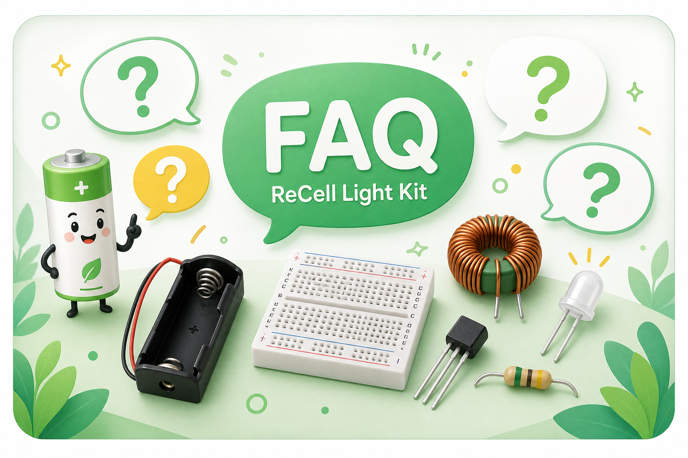
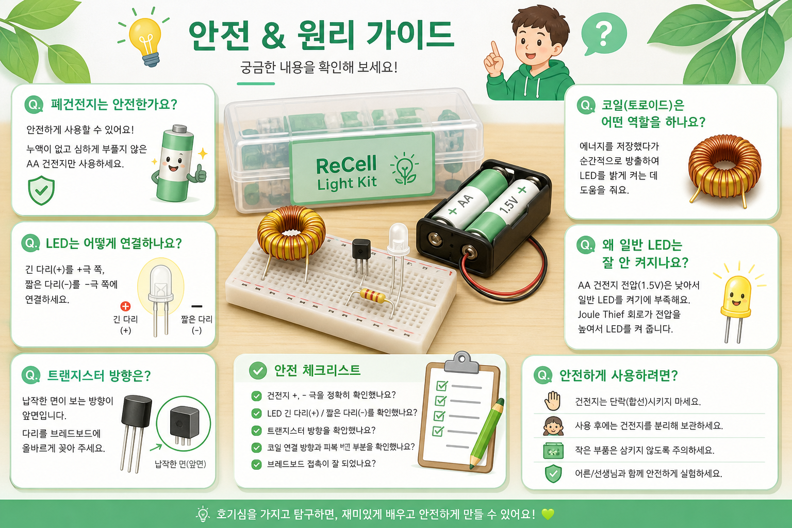

폐건전지는 정말 에너지가 남아 있나요?
네. 일반 기기에서는 쓰기 어려울 만큼 약해졌어도, 완전히 에너지가 사라진 것은 아닐 수 있습니다. 이 키트는 그 남은 에너지를 LED 빛으로 관찰하게 합니다.
FAQ
자주 나오는 질문을 미리 정리하면 교육 진행자가 같은 설명을 반복하지 않아도 되고, 학생도 스스로 문제를 해결하기 쉬워집니다.

네. 일반 기기에서는 쓰기 어려울 만큼 약해졌어도, 완전히 에너지가 사라진 것은 아닐 수 있습니다. 이 키트는 그 남은 에너지를 LED 빛으로 관찰하게 합니다.
흰색 LED는 AA 건전지 1개보다 높은 전압이 필요한 경우가 많습니다. 특히 약한 건전지는 전압이 낮아 LED가 켜지기 어렵습니다.
코일과 트랜지스터의 빠른 동작으로 낮은 입력 전압에서 순간적으로 더 높은 전압을 만들어 LED 점등을 돕습니다.
꼭 고장은 아닙니다. LED 극성, 트랜지스터 방향, 코일 연결 방향, 에나멜선 피복, 브레드보드 접촉을 먼저 확인해야 합니다.
누액 건전지는 사용하지 않고, 회로가 뜨거워지면 즉시 배터리를 분리합니다. 배터리 양극과 음극을 금속으로 직접 연결하지 않습니다.
